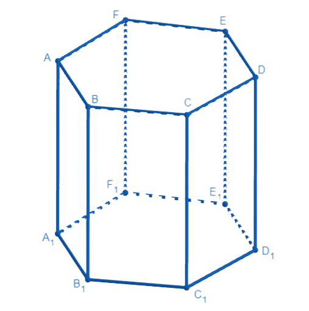

Основные методы решения стереометрических задач
Данный метод заключается в применении уже известного решения других (более простых) задач.
Под опорными задачами понимают задачи, которые могут являться частью других, более сложных задач, также их можно использовать при решении множества других подобных задач. Большинство задач из школьных учебников можно считать опорными. Часто результат решения опорной задачи фиксирует какой-либо факт, который часто встречается при решении стереометрических задачах и используется как свойство, которое не требует доказательства. К опорным задачам относятся также задачи, в процессе решения которых выводится формула, не входящая в теоретический материал учебников.
Метод опорных задач позволяет свести вычисления искомой величины к использованию результата решения некоторого набора стандартных задач.
Докажите, что: а) у прямой призмы все боковые грани – прямоугольники; б) у правильной призмы все боковые грани – равны прямоугольники.
а) 〖BB〗_1 A_1 B_1 C_1 D_1 E_1 F_1 (как ребро прямой призмы), следовательно, 〖BB〗_1 перпендикулярна любой прямой плоскости A_1 B_1 C_1 D_1 E_1 F_1, а значит 〖BB〗_1 B_1 C_1, т.е. BB_1 C_1=90°.
Докажите, что площадь боковой поверхности наклонной призмы равна произведению периметра перпендикулярного сечения на боковое ребро.
Вершина пирамиды проецируется в центр окружности, вписанной в основание пирамиды, Докажите, что боковые грани пирамиды образуют с плоскостью основания равные двугранные углы.